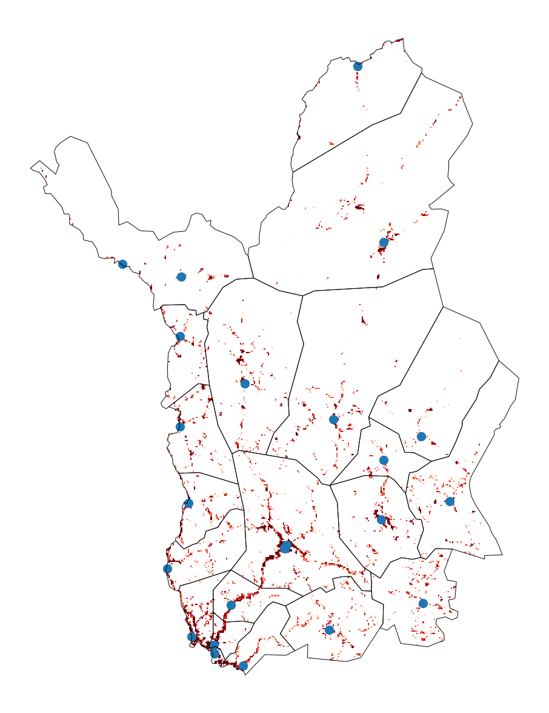

Lapin hyvinvointialue
- Terveysasemat ja -keskukset poimittu SOTE-organisaatiorekisteristä
- Joutui käsin kuratoimaan listan kunnittain. Rekisteriin on kirjattu terveyskeskusten alle kaikenlaista kouluterveydenhuollosta eteenpäin
Kuvio 1. Väestö ja terveysasemat
- Laskettu etäisyys kuhunkin väestöruutuun ja valittu lähin terveysasema/-keskus kullekin väestöruudulle
- Mitä punaisempi ruutu, sitä pidempi matka
Kuvio 2. Etäisyys lähimpään terveysasemaan